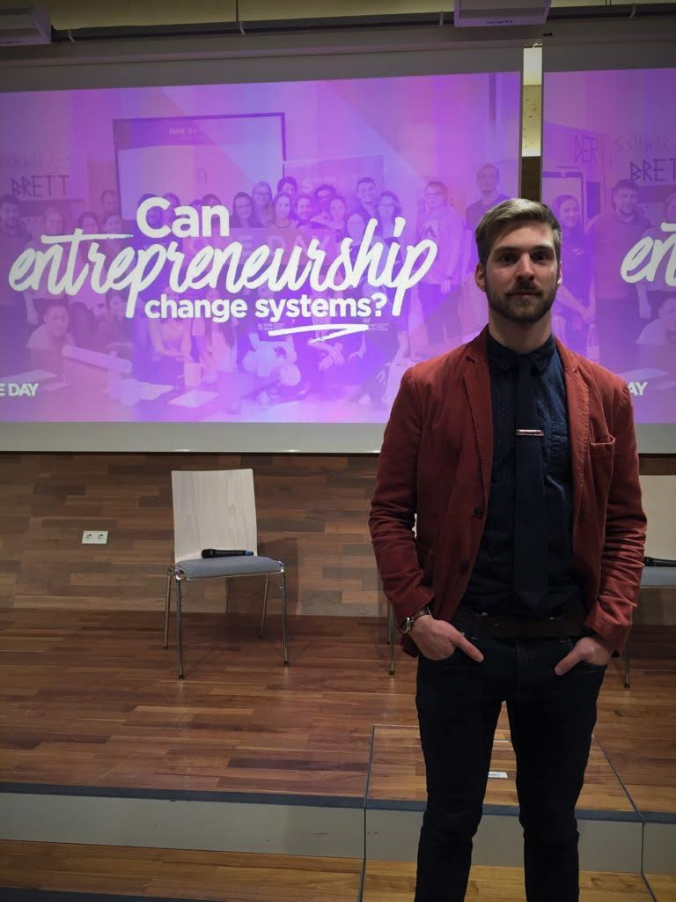

During summer semesters I teach one group of the Pro-Seminar course Applied Systems Science 1. My group, ambitiously called “Python-Wonderland”, deals with Warren Sanderson’s Wonderland-Model. The aim is to impart a thorough understanding of development in the Python programming language whilst gaining basic understanding of systems analysis.
Interested in systems science and speaking German? Read: Ohne System geht nix.
To learn more about systems science in general and in English refer to my former institute’s eTextbook.
For more Python programming basics coupled with systems check out Dr. Georg Jäger’s teaching materials for Computational Basics (German).
